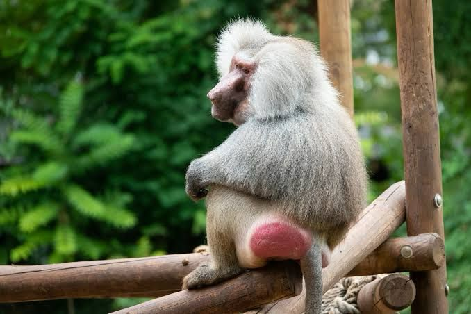

Introduction Baboons are large, ground-dwelling monkeys native to Africa and the Arabian Peninsula. These fascinating primates belong to the genus Papio and are easily recognized by their distinctive dog-like muzzles, powerful jaws, and closely set eyes. Highly adaptable, baboons thrive in diverse environments, from savannas and open woodlands to semi-deserts and rocky areas, making them one of Africa's most successful primate species.
Social Structure and Behavior Baboons live in highly complex social groups called "troops," which can range in size from a few dozen to over 200 individuals. Their social hierarchy is intricate, with dominant males often forming alliances to maintain their status, while females typically establish a stable dominance rank that can be passed down to their offspring. Communication is rich and varied, including a wide array of vocalizations, facial expressions, and body postures. Their daily life involves extensive foraging, grooming, and communal sleeping in trees or on cliffs for protection from predators.
Diet and Foraging As opportunistic omnivores, baboons have an incredibly broad diet. They spend much of their day foraging, demonstrating remarkable adaptability in finding food. Their diet includes:
Plant Matter: Grasses, leaves, roots, fruits, seeds, and flowers.
Insects: A wide variety of insects, grubs, and larvae.
Small Animals: They are known to hunt and eat small vertebrates like birds, rodents, and even young antelope, showcasing their predatory skills. This flexible diet allows them to survive in environments where specific food sources might be scarce.
Physical Characteristics Baboons are robust primates with significant sexual dimorphism, meaning males are considerably larger and heavier than females, and possess more prominent canine teeth. Their fur color varies by species, ranging from olive green to silver-grey or reddish-brown. A striking feature is their hairless, padded rump, which provides comfort for sitting and sleeping, and in females, it often swells and turns bright red during estrus, signaling fertility.
Conservation and Human Interaction While several baboon species are not currently endangered, they face challenges due to habitat loss and conflict with humans as their territories overlap. They are often viewed as agricultural pests due to crop raiding, leading to retaliatory killings. Conservation efforts focus on managing these human-wildlife conflicts and protecting their natural habitats to ensure their long-term survival in the wild.